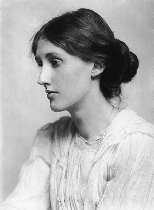

(25/1/1882 - 28/3/1941)
1882
Adeline Virginia Stephen ra đời ngày 25 tháng Một, tại London, con gái Leslie Stephen, một chính khách, nhà phê bình văn học và Julia Duckworth Stephen (Julia Jackson Duckworth, một trong những người tạo dựng nên Nhà xuất bản Duckworth). Cha của Virginia có một người con gái riêng mắc bệnh loạn trí và mẹ của Virginia có ba người con riêng. Họ cùng nhau có thêm bốn người con là: Vanessa, Julian Thoby, Virginia và Adrian. Virginia cùng các anh chị em được bố mẹ dạy tại nhà chứ không đến trường.
1895
Julia Stephen qua đời; Leslie Stephen để tang bà một thời gian dài; Virginia bị chấn động tâm lý dữ dội sau sự kiện này. Stella Duckworth, em gái Julia, thay chị điều hành công việc gia đình của chị, và trì hoãn hôn nhân của bản thân cho đến khi cô cháu gái Vanessa đủ khôn lớn để gánh vác việc nhà.
1897
Stella Duckworth kết hôn, mang bầu và qua đời.
1902
Leslie Stephen được phong tước hiệp sĩ.
1904-1905
Sir Leslie Stephen qua đời năm 1904. Virginia chịu thêm một cơn chấn động tâm lý, cố gắng tự sát bằng cách nhảy qua cửa sổ. Vanessa, Thoby, Virginia và Adrian chuyển tới Bloomsbury. Virginia xuất bản những tiểu luận đầu tiên và sau đó trở thành người điểm sách thường xuyên cho tờ Times Literary Supplement . Bà cũng giảng dạy tại các lớp học buổi tối cho nam nữ công nhân.
1906
Bốn anh chị em Virginia đi du lịch đến Hy Lạp, tại đây Vanessa và Thoby bị ốm; Thoby qua đời ở tuổi 26 vì bệnh thương hàn.
1907
Vanessa Stephen kết hôn với nhà phê bình Clive Bell. Virginia và Adrian ở chung phòng gần gia đình Bell.
1910
Triển lãm hậu-Ấn tượng đầu tiên được một người bạn của Virginia, nhà phê bình và nghiên cứu lịch sử nghệ thuật Roger Fry tổ chức. Virginia sau này đã viết rằng “vào khoảng tháng 12 năm 1910, đặc tính của con người đã thay đổi”. “Nhóm Bloomsbury” được tập hợp dần dần với những thành viên như Lytton Strachey, Roger Fry, Duncan Grant, Desmond MacCarthy, John Maynard Keynes và E. M. Forster.
1912-1915
Virginia Stephen kết hôn với Leonard Woolf vào ngày 10 tháng 8 năm 1912. Bà trải qua cơn trấn động tâm lý thứ ba, kéo dài ba năm liền sau đó. Trong khoảng thời gian này, bà hoàn thành cuốn tiểu thuyết The Voyage Out (Chuyến du lịch xa, từng có tên ban đầu là Melymbrosia ), nhưng việc xuất bản cuốn sách bị dừng lại vì chiến tranh bùng nổ vào ngày 4 tháng 8 năm 1914. Đến năm 1915, cuốn sách được xuất bản bởi người anh cùng mẹ khác cha của Virginia là Gerald Duckworth. Bà bắt đầu viết nhật ký.
1917
Vợ chồng Woolf mua lại một xưởng in và thành lập Nhà xuất bản Hogarth Press. Sau này, đây là nơi xuất bản các tác phẩm của T. S. Eliot, Katherine Mansfield, Freud, Gorky và toàn bộ các tác phẩm của Woolf.
1918
Chiến tranh kết thúc vào ngày 11 tháng 11.
1919
Xuất bản cuốn tiểu thuyết Night and Day (Đêm và Ngày), tại Nhà xuất bản của Gerald Duckworth; và tuyển tập các truyện ngắn tại Nhà xuất bản Hogarth Press.
1921
Xuất bản Monday or Tuesday (Thứ Hai hay thứ Ba), một truyện vừa, tại Nhà xuất bản Hogarth Press. Từ thời điểm này, tất cả các tác phẩm của bà đều do Nhà Hogarth Press ấn hành.
1922
Xuất bản Jacob’s Room (Căn phòng của Jacob).
1925
Xuất bản Mrs Dalloway (Bà Dalloway) và The Common Reader (Người đọc phổ thông), tập các tiểu luận. Nhà xuất bản Hogarth Press chuyển từ Richmond đến London.
1927
Xuất bản To the Lighthouse (Về phía ngọn hải đăng).
1928
Xuất bản Orlando , một cuốn tiểu thuyết “tiểu sử” về một người bạn của Woolf, Vita Sackville-West.
1929
Xuất bản cuốn tiểu luận dài về nữ quyền, A Room of One’s Own (Căn phòng riêng).
1931
Xuất bản The Waves (Những con sóng).
1932
Xuất bản The Common Reader: Second Series (Người đọc phổ thông: Loạt bài thứ hai).
1933
Xuất bản Flush (Cơn phấn khích đột ngột), “tiểu sử” của một người hâm mộ cho Elizabeth Barrett Browning (1806-1861, nữ nhà thơ thời Victoria).
1935
Sản xuất vở Freshwater (Nước ngọt), một vở hài kịch ba hồi cho bạn bè.
1937
Xuất bản The Years (Những năm tháng). Cháu trai Julian Bell chết trong Nội chiến Tây Ban Nha.
1938
Xuất bản cuốn tiểu luận về hoà bình và nữ quyền, Three Guineas (Ba đồng Guinea).
1939
Chiến tranh thế giới lại nổ ra vào ngày 3 tháng 9, vợ chồng Woolf dự định tự sát nếu nước Anh bị xâm chiếm.
1940
Xuất bản Roger Fry: A Biography (Roger Fry: Tiểu sử). Hoàn thiện kịch bản vở Between the Acts (Giữa những hồi kịch). Trong suốt thời gian chiến tranh tại Anh, London bị bom đạn phá huỷ.
1941
Trong một cơn chấn động tâm lý, nỗi sợ hãi dâng đầy, Virginia Woolf đã bỏ đầy đá vào túi và gieo mình xuống dòng River Ouse vào ngày 28 tháng 3, để lại thư tuyệt mệnh cho chồng và chị gái. Leonard xuất bản một số truyện ngắn, tiểu luận, thư từ cùng nhật ký còn lại của vợ, cùng một vài hồi ký về cuộc sống của hai người.
1960
Leonard Woolf qua đời.